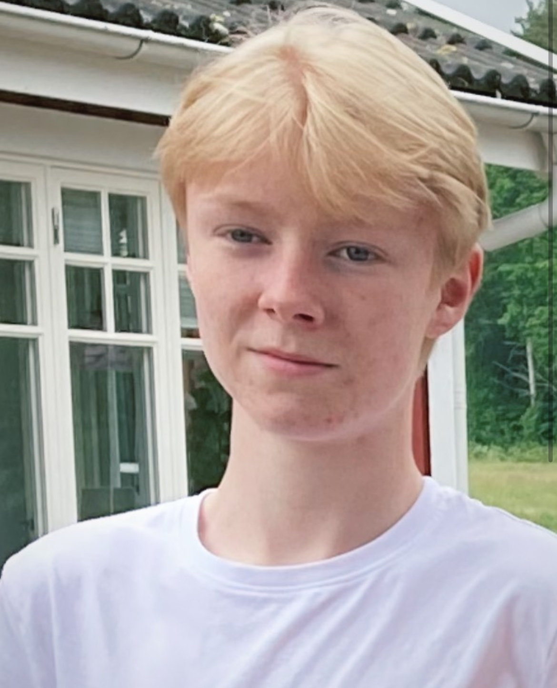

Meny
Start
Om mig
Skola
Fritid
Kontakt
76 808 41 78
simon.ivarsson@hotmail.se
OM MIG

Vem är jag?
Jag heter Simon Ivarsson och har precis fylly 17 år.
På min fritid tycker jag framförallt om att umgår med kompisar, kan vara över datorn eller att mötas i stan.
Jag bor i Kungälv, norr om Göteborg
Jag är intresserad av bland annat datorer och spel.
Om jag ska berätta kort om mig själv skulle jag säga att jag är snäll, omtänksam och trevlig.
Jag går på teknikprogrammet på ett gymnasium i Göteborg som jag pendlar till varje dag.
Målen jag har just nu är att lära mig mer av allt.
Ser fram emot framtiden då ett helt nytt liv börjar med nya utmaningar och massor av nytt att lära sig.
.png) Start
Start  Om mig
Om mig Skola
Skola Fritid
Fritid 76 808 41 78
76 808 41 78 simon.ivarsson@hotmail.se
simon.ivarsson@hotmail.se